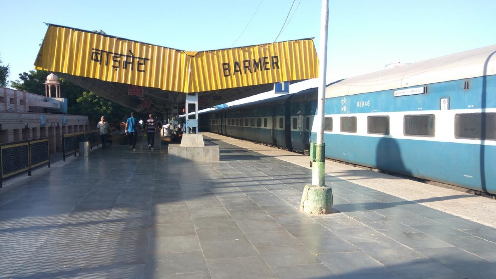

The land we work in
Barmer: the desert district
The third-largest district in Rajasthan, on the Pakistan border, entirely inside the Thar — and known across the world for its folk culture, its crafts and, lately, its oil.
Barmer is an extremely important and historic district of the Thar Desert, in the western part of Rajasthan. By area it is the third largest district in the state. Despite its harsh climate and its difficult, shifting sand dunes, Barmer is known across the world for its rich folk culture, its remarkable handicrafts, its historic heritage, and — in recent years — for the vast reserves of oil and gas discovered beneath it.
Where the name comes from
It is believed that the city was founded in the thirteenth century by the Parmar ruler Bahad Rao Parmar (Bar Rao). It was named after him: first Bahadmer, "the hill fort of Bahad", which later became Barmer.
In ancient times the region was also called Mallani, after Rawal Mallinath, who is worshipped here to this day as a folk deity.
In 1552, Rawat Bhima laid the foundation of the present city and built the hill fort known as Barmer Garh. After independence, when the princely state of Jodhpur merged with the Union in 1949, Barmer was made a district in its own right.
The land and how it is lived on
Barmer lies entirely within the Thar Desert. To its west runs the international border with Pakistan; to its south lies the Rann of Kachchh in Gujarat. The main lifeline of this dry region is the Luni river, which flows through its southern part.
The principal crop is bajra (pearl millet). With modern techniques, however, isabgol (psyllium), cumin and pomegranate are now also grown here on a large scale.

Music, cloth and craft
Barmer is famous for its folk music and dance. Hereditary musician communities such as the Langa and the Manganiyar have carried Marwari folk song and Sufi music to audiences all over the world.
The traditional block printing done on cloth here — above all Ajrakh print, with its geometric designs in deep red and indigo — is renowned throughout India. Barmer's finely carved wooden furniture, its mirror-work embroidery and its pottery are the district's other great attractions.
Places worth the journey
- Kiradu Temples
- Thirty-five kilometres from Barmer, these ancient temples are called the Khajuraho of Rajasthan for the quality of their sculpture and architecture.
- Barmer Fort and the Garh Mandir
- The historic fort stands on a rocky hill at the centre of the town, and holds the well-known Garh Mandir — the temple of Jagdamba Mata.
- Shri Nakoda Jain Temple
- Near Balotra: one of the most sacred and celebrated pilgrimage sites of the Jain community.
- The dunes of Mahabar
- Magnificent sand dunes close to the town, where visitors come for the real beauty of the desert and for the sunset.
- Brahmadham Asotra
- One of only two temples in the world where Brahma and Savitri are worshipped together — the other being at Pushkar.
- The Rann of Redana
- Where water gathers in the middle of the desert. Locally, and not without affection, it is called mini Goa.
Oil, refinery and a new economy
Barmer's Mangala field and its other oil fields are among the largest domestic producers of crude in India, yielding hundreds of thousands of barrels a day. A state-of-the-art petrochemical refinery has been established at Pachpadra in Barmer district, and it has changed the economy of this region completely.
The old way of life
The old life of Barmer is a singular example of what people made out of the Thar's difficult geography, of sheer nerve, and of a rich inheritance of culture. Centuries ago, the people here worked out an arrangement with nature's harshest terms — extreme heat, and almost no water — and built from it a way of living that was extremely spare and completely alive.
Houses of mud, straw and dung
In the villages, people lived in round huts of mud, straw and cow dung called jhumpa. The roofs were built in a cone from grass and the wood of khejri and aak, and they kept the inside of the house remarkably cool even in the fiercest heat. On the mud walls, women drew mandana — traditional wall paintings in white chalk and cow dung, and very beautiful.
Food from what the desert gave
Traditional food here depended entirely on locally available crops and wild plants. Because of the scarcity of water, bajra was the main crop: sogra, the bajra roti, was eaten with kadhi, with rabdi, or with camel or goat milk and ghee.
In the absence of fresh green vegetables, people dried the fruits of desert shrubs and trees — ker, sangri, kumath and kachri — and used them as vegetables through the year. That combination is what is known today as panchkuta.
Every drop of water was precious, so drinking water was drawn from the tanka, a traditional rainwater-harvesting system, and from deep wells — both of them in use here since ancient times.
Herds, camels and the trade routes
Farming depended entirely on the monsoon, so the main livelihood was animal husbandry: camels, Tharparkar cattle, sheep and goats. Barmer sat on the old camel trade routes, and traders from Sindh and Central Asia passed through it. The trade in camels and horses was the backbone of the economy.
The musicians and the storytellers
The Langa and Manganiyar communities have kept the folk music of Barmer alive since ancient times, singing the tales of heroes and the songs of the region to the kamaycha, the khartal and the sarangi. The Bhopa and Bhopi sang all night in front of the phad — a long painted cloth — telling the stories of folk deities such as Pabuji and Ramdevji.
This way of life carried the deep impress of Sufi saints, Jain monks and Rajput warriors. The ancient temples of Kiradu, and the veneration of warrior-saints like Mallinath, stood at the centre of social life. And because water and resources were always short, there was a tradition of sanjha jeevan — shared life — in which the whole village stood ready to help one another.
The customs and superstitions that hardship bred
Barmer's extremely hard geography, the repeated blows of famine, and the constant threat of invasion made its people tough. But social insecurity and the shortage of resources also produced a number of harmful customs and superstitions. Unable to understand nature's fury — drought, epidemic — people fell back on superstition.
The list below is set down plainly, because a district cannot leave behind what it will not name. Much of it is now in retreat: see what has changed.
- Child marriage
- Girls were married at a very young age — to protect them from invaders, and to be free of the burden of moving them during famine.
- The aata-saata custom
- To save the cost of weddings in conditions of poverty and scarcity, families exchanged girls — a daughter of one house for a daughter of the other. Badly matched marriages were the result.
- Mausar, the death feast
- To show standing in the community, even poor families ruined by famine would take heavy loans from moneylenders to feed the entire village after a death — and sink into debt.
- The purdah custom
- To shield women from the punishing sun, and because of social insecurity, women were kept always behind a deep veil and within tight restrictions.
- The davaria custom
- When the daughters of kings and landholders married, unmarried girls from poor families were sent with them as part of the dowry, to serve as maids.
- Caste discrimination and control of water
- Because water was so scarce, dominance over the good wells and tankas was enforced through inhuman untouchability practised against the lower castes.
- Dakan — witch-hunting
- When an epidemic broke out in a village, or cattle began to die, ignorance would fasten on a single woman — usually alone, elderly or defenceless — who was declared a dakan, accused of sorcery, and persecuted.
- Dependence on bhopas and tantriks
- With no modern medicine available, the seriously ill were taken not to a doctor but to the local bhopa or tantrik, who "treated" them with charms, amulets and agonising procedures such as branding with a red-hot iron rod.
- Superstitions about famine and rain
- When the rains failed, people took it for the anger of the gods. Strange remedies were performed to please Indra — making a donkey pull the plough, or staging a symbolic marriage of frogs.
- Deep belief in omens
- Journeys across the desert were genuinely dangerous. So a sneeze as you left the house, the sight of an empty pot, or a cat crossing your path was read as a bad omen, and people would call off the journey.
- Charms for sick animals
- When a camel or a cow fell ill, instead of treating the animal people tied special threads (tanti) at the village boundary, or released the animal in the name of a god or goddess.
None of this is written here to shame anyone. It is written because it explains the work. Every one of these customs was a rational-looking response to scarcity, and every one of them cost the people of this district dearly — usually the women, the poorest and the lowest castes first. Undoing them is a large part of what an organisation like ours exists to do.
Work with us, or simply come and see
We are a small organisation with a long memory of this district. If you would like to volunteer, partner with us, support a programme, or just understand what is happening in Barmer — write to us or pick up the phone.